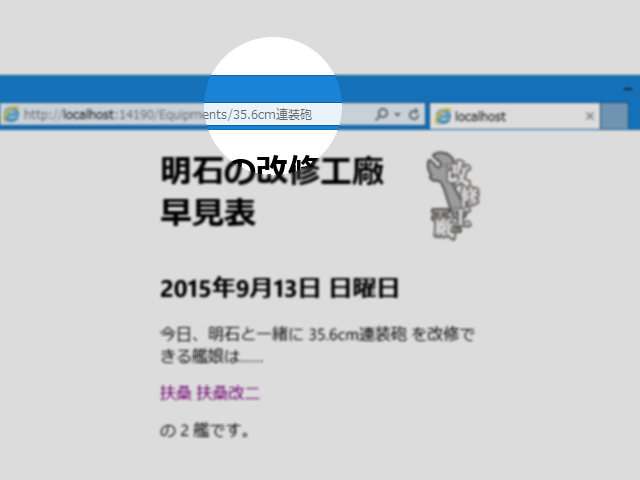

WebMatrix： URL にドットを含めたい
公開日：

Wiki エンジンなんかを作るときなど、「ドット（.）」を URL に含めたい場合は、Web.config に一行、以下のように加えるといいみたい。
<?xml version="1.0" encoding="UTF-8"?> <configuration> <system.webServer> <modules runAllManagedModulesForAllRequests="true" /> </system.webServer> </configuration>
静的リソースまでアプリケーションで処理するようになる（？）ので、効率が悪そうだけど。もっとちゃんと対策したければ、以下の URL が参考になりそう。